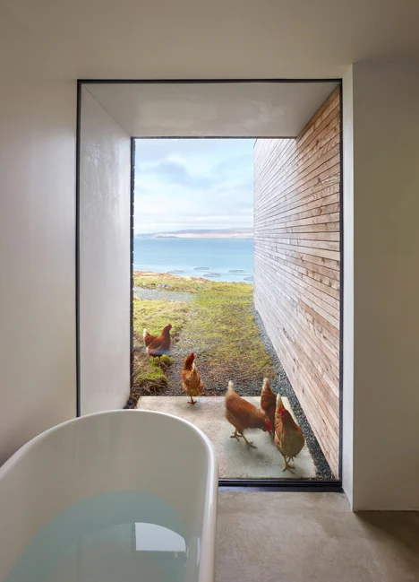

Escape to the rugged beauty of Scotland's windswept beaches when you stay at our quaint seaside cottages. Nestled on the shores of the North Sea, our whitewashed stone cottages look like they're straight out of a postcard. Step inside to find cozy, well-appointed interiors with plush beds, a crackling fireplace, and views of the ocean through flowering gardens.
Start your morning with a brisk walk on the sandy beach just outside your door. The beach extends for miles in either direction, perfect for clearing your head. Then stop into town for a hearty Scottish breakfast at one of the local pubs, complete with eggs, toast, sausage, and black pudding.
Spend your days exploring the ruins of medieval castles dotting the coastline or wandering through the old harbor filled with colorful fishing boats bringing in the daily catch.

We're located near several seaside villages where you can meander through craft shops and try smoked salmon,Scotch whisky, or sample our famous fish and chips.
In the evenings, return to your cottage to relax with a dram of Scotch as the sun sets over the sea. From our prime location, you're just a short drive to play a round of golf at Scotland's famed courses or tour renowned distilleries. Let the sound of the waves lull you to sleep under the glow of the moon.
With complimentary WiFi and breakfast delivered right to your door, our cottages make it easy to enjoy charming Scottish hospitality. Inquire today about booking your coastal escape!